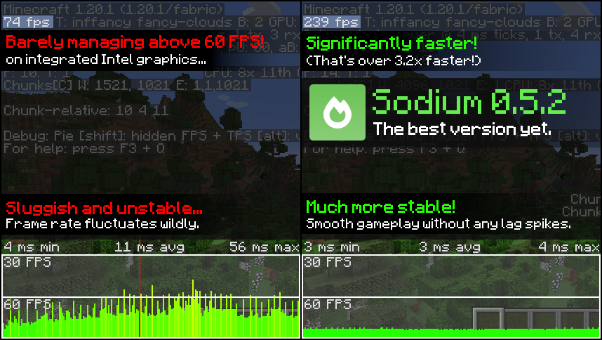
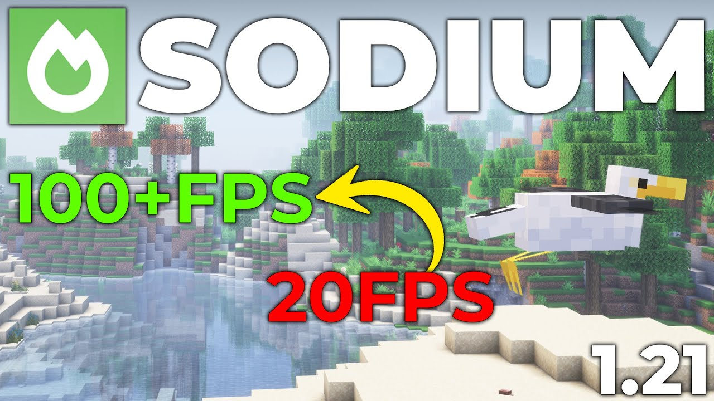
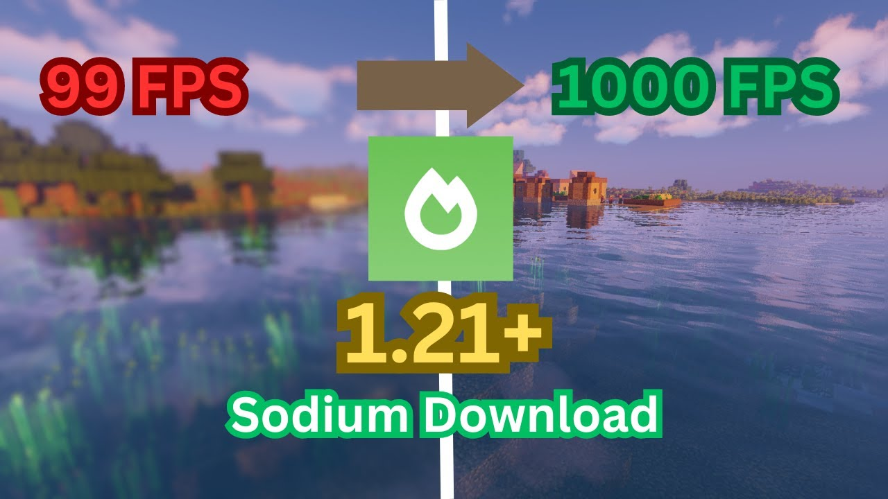
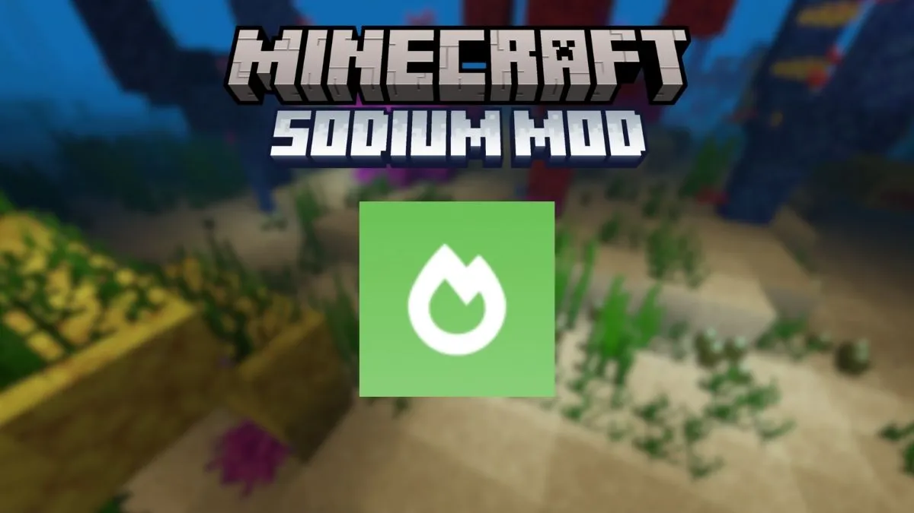
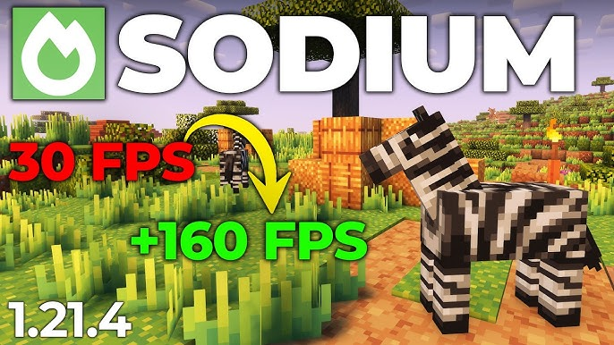
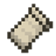

Sodium
v0.5.8The fastest rendering engine for Minecraft. Engineered for Fabric.
/10
downloads
Quick Install
File size
1.4 MBsha-512
a3f9c…d812Game version
1.21Loader
Fabric 0.15.9All releases on GitHub Releases and Modrinth
Screenshots





About
Unlike OptiFine, Sodium focuses exclusively on rendering optimization and works hand-in-hand with other Fabric mods. It exposes the Fabric Rendering API through the companion mod Indium, allowing full compatibility with third-party mods.
- Up to 500% FPS improvement on complex scenes
- Fixes multiple rendering bugs present in vanilla
- Full compatibility with Iris Shaders
- Eliminates micro-stuttering from chunk updates
- Significantly reduces CPU usage during rendering
- Open-source under LGPL-3.0
-
1Install Fabric Loader for your Minecraft version.
-
2Download Fabric API and place it in your mods folder.
-
3Download Sodium from this page and place the .jar in your mods folder.
-
4Launch Minecraft with the Fabric profile.
Compatibility
-
 Iris Shader Purpose-built to work with Sodium
Iris Shader Purpose-built to work with Sodium -

Fabric API Required dependency — fully supported -
Lithium Complementary optimization, no conflicts
-
FerriteCore Works on different memory systems
-
Indium Bridge layer for FRAPI compatibility
-
 OptiFine
OptiFine
Reason: Both deeply modify the Minecraft rendering pipeline
Alternative: Use Iris Shaders instead
-
Optifabric
Reason: Wrapper for OptiFine, inherits all conflicts
Alternative: Use Iris + Sodium natively
Changelog
- Fixed rendering artifacts on AMD GPU drivers 24.x+
- Improved chunk boundary handling in mountainous terrain
- Reduced memory pressure during fast movement
- Added support for Minecraft 1.21
- Refactored vertex buffer pooling system
- Fixed translucent sorting edge cases
- Emergency fix for chunk corruption on 1.20.4
- Improved compatibility with external render mods